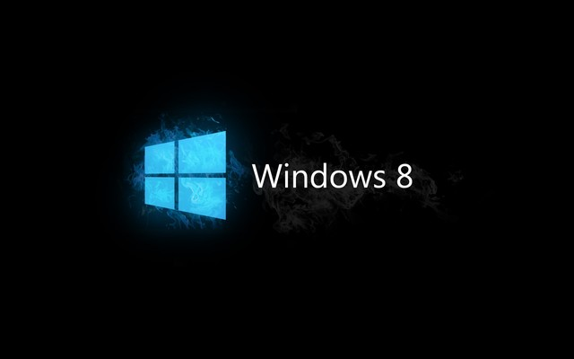
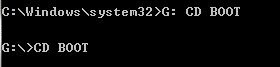
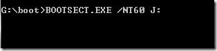
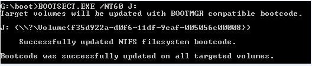
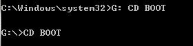
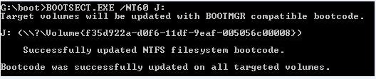
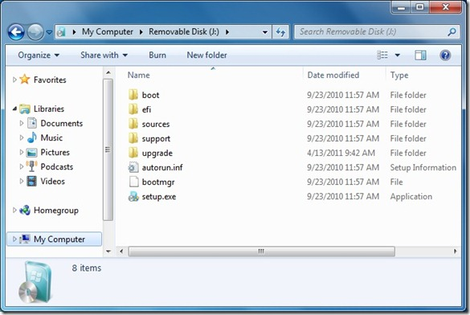

KELOMPOK TEAM_IDV2
NAMA ANGGOTA :
Obbie Cristian
Imal Zaya Harahap
Kade Sukawati
Dwi Herydo Gultom
TUTORIAL INSTALL WIN 8
PERKENALAN WINDOWS 8

Windows 8 adalah nama dari versi terbaru Microsoft Windows, serangkaian sistem operasi yang diproduksi oleh Microsoft untuk digunakan pada komputer pribadi, termasuk komputer rumah dan bisnis, laptop, netbook, tablet PC, server, dan PC pusat media.[4] Sistem operasi ini menggunakan mikroprosesor ARM selain mikroprosesor x86 tradisional buatan Intel dan AMD. Antarmuka penggunanya diubah agar mampu digunakan pada peralatan layar sentuh selain mouse dan keyboard, sehingga Windows 8 di desain untuk perangkat tablet sentuh.
Microsoft secara resmi merilis Windows 8 pada 26 Oktober 2012 bersamaan dengan peluncuran komputer perdana yang menggunakan Windows 8.[5] Versi percobaan Windows 8 berupa Consumer Preview dan Release Preview.[6] Pada 26 Juni 2013, Microsoft merilis versi Uji Coba dari Windows 8.1 (sebelumnya dikenal sebagai Windows Blue), sebuah peningkatan untuk Windows 8, Windows 7, Windows Vista, dan Windows XP. Pada 18 Oktober 2013, Microsoft merilis Windows 8.1 sebagai pembaruan gratis untuk Windows 8.
Kelebihan Windows 8 dan fitur-fitur barunya yang semakin memanjakan penggunanya. Berikut ini seputar kelebihan dan fitur-fiturnya.
- Mendukung chip ARM
- Dioptimalisasi untuk layar sentuh
Cont...
- Toko aplikasi Windows Store
- Mendukung NFC (Near Field Communications)
- Waktu boot yang singkat
- Internet Explorer 10
- Sekuriti lebih baik
- Windows 8 tidak membutuhkan upgrade PC
Sebelum Menginstall
Catatan: Harap Backup dahulu isi USB flashdisk kita, karena kita akan memformatnya kemudian.
Langkah-Langkah menginstall Windows 8 Melalui USB Flashdisk
Sekarang ketikkan perintah berikut satu persatu diikuti dengan menekan tombol Enter
\n Select DISK 1
Clean
Create Partition Primary
Active
Format Fs=NTFS
Assign
Exit
- Sekarang Mount file ISO windows 8
- G: CD BOOT lalu tekan Enter (dimana G: adalah virtual drive yg telah kita bikin (mount))

- Ketik : BOOTSECT.EXE /NT60 J: ( dimana J: adalah nama drive USB flashdisk kita, dapat kita cek di my computer atau windows explorer)




- Sekarang bukalah windows explorer dan copykan semua isi file ISO yang telah kita mount tadi dengan memakai program Virtual CD atau ultra ISO dll, copy kan semua isinya ke dalam USB flashdisk kita. Jika memakai CD/DVD tinggal copykan saja semuanya kedalam usb flashdisk kita.

Cont...
MENGINSTALL

Cont...
- Pertama-tama nyalakan komputer dan di dalam keadaan booting tekan Esc untuk memasuki Boot Menu. Kemudian masukkan DVD instalasi Windows 8. Lalu pilih Boot Menu dengan menggunakan CD/DVD-ROM.

Kemudian akan Muncul,dan klik next

Muncul jendelaWindows Setup,kemudial klikInstall Now
Kemudian akan Muncul,dan klik next
Cont...
- Masukkan product key window 8.Klik Next lalu ceklisI accept the license terms


Cont...
- Pilih partisi yang ingin kamu install Windows 8, sebaiknya kamu install di partisi yang pertama berada diatas sendiri dan klik Next. Kalau partisi komputer kamu belum di setting, kamu bisa melakukannya dengan mengklik Drive Options.

Kemudian tunggu proses instalasi